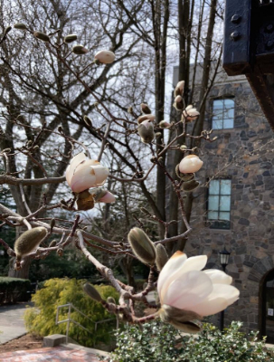
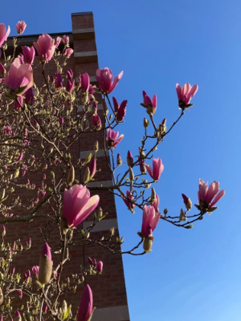
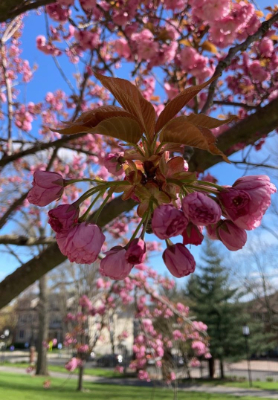

CS20 Homework 1: Get on the Web
Name: Abigail (or Abby)
Majors: Computer Science + Environmental Studies
IP Address: 130.64.64.65
Where I Grew Up: Quincy, MA
Something you might not expect about me if you didn't know me is
that I played clarinet in middle school.
One of my favorite places is campus in the spring because I love
seeing all the flowers bloom--it's so pretty!!
From left to right are flowering trees near Barnum, Harleston Hall,
and Tisch library.


